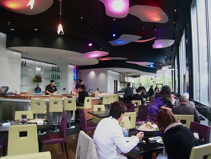

|  |
| Originally located on West Hastings St in Coal Harbour, Miku first introduced Aburi-style cuisine to Vancouver in 2008. Our new location offers a full bar and lounge area, waterfront patio, private dining room and full service sushi bar. Executive Corporate Chef Kazuya Matsuoka and Executive Chef Kazuhiro Hayashi take advantage of fresh, regional ingredients as well as Ocean Wise seafood options to showcase the best of what Vancouver has to offer. |
- Hotel: Miku Restaurant
- Reviews:

 (4.6)
(4.6) - Price per night: $21
- URL: www.mikurestaurant.com
- Phone: 604 568-3900
- Address: Canada Pl, Vancouver, BC, Canada